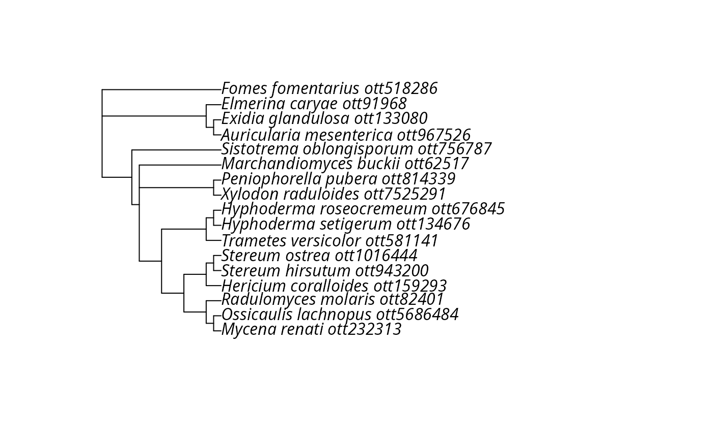
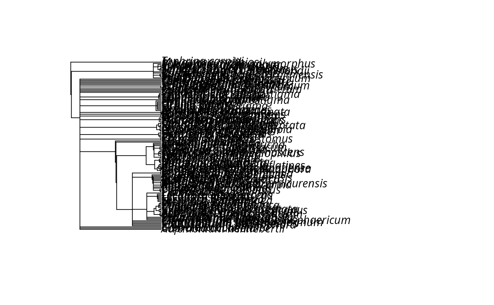

Make a phylogenetic tree using the ASV names of a physeq object and the Open Tree of Life tree.
Arguments
- physeq
(required): a
phyloseq-classobject obtained using thephyloseqpackage.- species_colnames
(default: "Genus_species"): the name of the column where the species binominal name is stored in
@tax_tableslot. Can also be a vector of two columns names e.g.c("Genus", "Species")- context_name
: can bue used to select only a part of the Open Tree of Life. See
?rotl::tnrs_contexts()for available values
Details
This function is mainly a wrapper of the work of others.
Please make a reference to rotl package if you
use this function.
Examples
# \donttest{
if (requireNamespace("rotl")) {
tr <- rotl_pq(data_fungi_mini, species_colnames = "Genus_species")
plot(tr)
tr_Asco <- rotl_pq(data_fungi, species_colnames = "Genus_species", context_name = "Ascomycetes")
plot(tr_Asco)
}
#> Loading required namespace: rotl
#> Warning: Some names were duplicated: ‘stereum ostrea’, ‘ossicaulis lachnopus’, ‘fomes fomentarius’, ‘fomes fomentarius’, ‘xylodon raduloides’, ‘ossicaulis lachnopus’, ‘ossicaulis lachnopus’, ‘stereum ostrea’, ‘fomes fomentarius’, ‘xylodon raduloides’, ‘exidia glandulosa’.
#> Warning: Some names were duplicated: ‘stereum ostrea’, ‘ossicaulis lachnopus’, ‘fomes fomentarius’, ‘fomes fomentarius’, ‘xylodon raduloides’, ‘ossicaulis lachnopus’, ‘ossicaulis lachnopus’, ‘stereum ostrea’, ‘fomes fomentarius’, ‘xylodon raduloides’, ‘exidia glandulosa’.
#> Warning: Dropping singleton nodes with labels: mrcaott109ott9895, mrcaott109ott50573, mrcaott109ott233596, mrcaott109ott206, mrcaott109ott240843, mrcaott109ott11233, mrcaott11233ott46244, mrcaott11233ott47319, mrcaott47319ott135577, mrcaott47319ott317441, mrcaott47319ott55252, mrcaott2427ott25198, mrcaott25198ott140745, Lyophyllaceae ott1048880, mrcaott25198ott343967, mrcaott343967ott434508, Ossicaulis ott343990, mrcaott30821ott46242, Pterulaceae ott637619, Radulomyces ott82394, mrcaott471ott44719, mrcaott471ott5265, mrcaott32867ott86441, mrcaott86441ott477103, mrcaott86441ott159293, mrcaott159293ott212207, Hericium ott1044744, mrcaott106245ott181624, mrcaott106245ott295001, mrcaott106245ott424266, mrcaott106245ott237731, mrcaott1939ott4100, mrcaott1939ott86215, mrcaott1939ott52426, mrcaott1939ott7501, mrcaott1939ott459078, mrcaott1939ott31634, mrcaott1939ott228595, mrcaott1939ott137433, Trametes ott205112, mrcaott6711ott6854, mrcaott6711ott39549, Meruliaceae ott42234, mrcaott42575ott455004, Schizoporaceae ott580418, Xylodon ott640041, Peniophorella ott351728, Marchandiomyces ott985876, mrcaott2361ott40692, Cantharellales ott558119, mrcaott2361ott10072, mrcaott2361ott70669, mrcaott2361ott30094, mrcaott2361ott133843, Hydnaceae ott160852, Sistotrema ott604159, mrcaott3860ott11234, mrcaott11234ott134670, Auricularia ott183795, Exidia ott133079, Aporpiaceae ott938070, Elmerina ott654643, Fomes ott5342097

#> Warning: Some names were duplicated: ‘stereum ostrea’, ‘ossicaulis lachnopus’, ‘fomes fomentarius’, ‘fomes fomentarius’, ‘xylodon raduloides’, ‘ossicaulis lachnopus’, ‘ossicaulis lachnopus’, ‘biscogniauxia nummularia’, ‘stereum ostrea’, ‘fomes fomentarius’, ‘xylodon raduloides’, ‘exidia glandulosa’, ‘hericium coralloides’, ‘hyphoderma setigerum’, ‘scytalidium lignicola’, ‘hericium coralloides’, ‘calycina claroflava’, ‘hysterobrevium constrictum’, ‘helicogloea pellucida’, ‘trametes versicolor’, ‘stereum ostrea’, ‘helicogloea pellucida’, ‘scheffersomyces lignosus’, ‘angustimassarina acerina’, ‘trametes versicolor’, ‘fomes fomentarius’, ‘marchandiomyces buckii’, ‘stereum ostrea’, ‘pertusaria pertusa’, ‘natantiella ligneola’, ‘inonotus obliquus’, ‘lophiostoma cynaroidis’, ‘trametes versicolor’, ‘mycena renati’, ‘torrentispora calembola’, ‘stereum ostrea’, ‘scheffersomyces stipitis’, ‘trametes versicolor’, ‘penicillium brevicompactum’, ‘physcia stellaris’, ‘inonotus obliquus’, ‘basidiodendron eyrei’, ‘inonotus rickii’, ‘inonotus obliquus’, ‘calocera cornea’, ‘barbatosphaeria neglecta’, ‘spadicoides bina’, ‘scheffersomyces lignosus’, ‘penicillium brevicompactum’, ‘lasionectria oenanthicola’, ‘brunneofusispora sinensis’, ‘hyperphyscia adglutinata’, ‘fomes fomentarius’, ‘spadicoides bina’, ‘pertusaria leioplaca’, ‘phaeoisaria sparsa’, ‘eutypa spinosa’, ‘dacrymyces stenosporus’, ‘trametes versicolor’, ‘penicillium brevicompactum’, ‘clitopilus hobsonii’, ‘sistotrema oblongisporum’, ‘dacrymyces stenosporus’, ‘hyperphyscia adglutinata’, ‘cladosporium austrohemisphaericum’, ‘cryptocoryneum condensatum’, ‘hericium coralloides’, ‘dacrymyces stenosporus’, ‘dacrymyces stenosporus’, ‘phaeoisaria sparsa’, ‘inonotus rickii’, ‘barbatosphaeria neglecta’, ‘phialocephala oblonga’, ‘stereum ostrea’, ‘sistotrema oblongisporum’, ‘dacrymyces stenosporus’, ‘peniophorella pubera’, ‘dacrymyces stenosporus’, ‘pertusaria pertusa’, ‘stereum ostrea’, ‘natantiella ligneola’, ‘hyaloscypha albohyalina’, ‘spadicoides bina’, ‘dactylospora vrijmoediae’, ‘barbatosphaeria neglecta’, ‘eutypa spinosa’, ‘angustimassarina premilcurensis’, ‘calocera cornea’, ‘dacrymyces stenosporus’, ‘resupinatus poriaeformis’, ‘hyperphyscia adglutinata’, ‘hyperphyscia adglutinata’, ‘sistotrema oblongisporum’, ‘calycina claroflava’, ‘parmelina tiliacea’, ‘phaeoisaria sedimenticola’, ‘eutypa spinosa’, ‘symbiotaphrina buchneri’, ‘trametes versicolor’, ‘pleomonodictys descalsii’, ‘oidiodendron periconioides’, ‘scheffersomyces lignosus’, ‘sistotrema brinkmannii’, ‘eutypa spinosa’, ‘cryptocoryneum condensatum’, ‘dacrymyces stenosporus’, ‘clitopilus hobsonii’, ‘xylodon raduloides’, ‘cryptodiscus microstomus’, ‘vishniacozyma victoriae’, ‘lecidella f. elaeochroma’, ‘basidiodendron eyrei’, ‘eutypa spinosa’, ‘stereum ostrea’, ‘symbiotaphrina buchneri’, ‘cryptodiscus microstomus’, ‘chlorociboria aeruginascens’, ‘biscogniauxia nummularia’, ‘orbilia eucalypti’, ‘lecanora glabrata’, ‘exidia glandulosa’, ‘orbilia cejpii’, ‘stereum ostrea’, ‘cryptocoryneum condensatum’, ‘scytalidium album’, ‘mycena renati’, ‘hyperphyscia adglutinata’, ‘calocera cornea’, ‘sistotrema oblongisporum’, ‘calocera cornea’, ‘melanchlenus eumetabolus’, ‘helicogloea pellucida’, ‘orbilia euonymi’, ‘phaeoisaria sedimenticola’, ‘scytalidium lignicola’, ‘phialocephala oblonga’, ‘basidiodendron eyrei’, ‘dacrymyces stenosporus’, ‘scytalidium lignicola’, ‘acericola italica’, ‘calocera cornea’, ‘dacrymyces stenosporus’, ‘scheffersomyces stipitis’, ‘cryptocoryneum condensatum’, ‘scheffersomyces stipitis’, ‘stereum ostrea’, ‘scheffersomyces stipitis’, ‘phlyctis agelaea’, ‘helicogloea pellucida’, ‘phlyctis agelaea’, ‘scheffersomyces lignosus’, ‘penicillium brevicompactum’, ‘scytalidium lignicola’, ‘candida santjacobensis’, ‘penicillium brevicompactum’, ‘lophiostoma cynaroidis’, ‘chondrostereum purpureum’, ‘phlyctis agelaea’, ‘pertusaria leioplaca’, ‘melanchlenus eumetabolus’, ‘hyperphyscia adglutinata’, ‘xylodon raduloides’, ‘physcia stellaris’, ‘pleomonodictys descalsii’, ‘penicillium brevicompactum’, ‘mycosphaerella tassiana’, ‘hyperphyscia adglutinata’, ‘stypella subgelatinosa’, ‘barbatosphaeria neglecta’, ‘pertusaria pertusa’, ‘phialocephala oblonga’, ‘angustimassarina acerina’, ‘cryptodiscus microstomus’, ‘phaeophyscia denigrata’, ‘stereum ostrea’, ‘calycina claroflava’, ‘melanchlenus eumetabolus’, ‘calycina claroflava’, ‘brunneofusispora sinensis’, ‘dacrymyces stenosporus’, ‘stypella subgelatinosa’, ‘exidia glandulosa’, ‘phialocephala oblonga’, ‘rhamphoria pyriformis’, ‘exidia glandulosa’, ‘hyperphyscia adglutinata’, ‘scheffersomyces lignosus’, ‘melanchlenus eumetabolus’, ‘pseudodiplococcium ibericum’, ‘lecidella f. elaeochroma’, ‘orbilia xanthostigma’, ‘pseudodiplococcium ibericum’, ‘scytalidium lignicola’, ‘hysterobrevium constrictum’, ‘pleomonodictys descalsii’, ‘capronia pilosella’, ‘plenodomus biglobosus’, ‘phaeoacremonium inflatipes’, ‘colacogloea cycloclastica’, ‘lecanora glabrata’, ‘symbiotaphrina buchneri’, ‘capronia pilosella’, ‘hyperphyscia adglutinata’, ‘hyperphyscia adglutinata’, ‘angustimassarina acerina’, ‘pertusaria leioplaca’, ‘parafenestella mackenziei’, ‘hyperphyscia adglutinata’, ‘physcia stellaris’, ‘vexillomyces verruculosus’, ‘scytalidium lignicola’, ‘biscogniauxia nummularia’, ‘dacrymyces stenosporus’, ‘vishniacozyma victoriae’, ‘oidiodendron griseum’, ‘penicillium brevicompactum’, ‘phaeoisaria sedimenticola’, ‘eutypa spinosa’, ‘phaeoacremonium inflatipes’, ‘stypella subgelatinosa’, ‘hyperphyscia adglutinata’, ‘scytalidium album’, ‘phialocephala oblonga’, ‘scheffersomyces stipitis’, ‘mycosphaerella tassiana’, ‘scheffersomyces stipitis’, ‘omphalotus olearius’, ‘angustimassarina acerina’, ‘phialocephala oblonga’, ‘scytalidium lignicola’, ‘angustimassarina premilcurensis’, ‘tausonia pullulans’, ‘hysterobrevium constrictum’, ‘scheffersomyces lignosus’, ‘symbiotaphrina buchneri’, ‘xylodon raduloides’, ‘pertusaria leioplaca’, ‘cladosporium austrohemisphaericum’, ‘paraphoma fimeti’, ‘mycosphaerella tassiana’, ‘eutypa spinosa’, ‘lophiostoma cynaroidis’, ‘calocera cornea’, ‘cladosporium delicatulum’, ‘penicillium brevicompactum’, ‘eutypa spinosa’, ‘cryptocoryneum condensatum’, ‘penicillium brevicompactum’, ‘cryptendoxyla hypophloia’, ‘exidia glandulosa’, ‘cladosporium austrohemisphaericum’, ‘scytalidium lignicola’, ‘dactylospora vrijmoediae’, ‘symbiotaphrina buchneri’, ‘scheffersomyces lignosus’, ‘eutypa spinosa’, ‘phaeoisaria sedimenticola’, ‘mycena renati’, ‘barbatosphaeria neglecta’, ‘hyperphyscia adglutinata’, ‘cadophora melinii’, ‘phaeoisaria sparsa’, ‘basidiodendron eyrei’, ‘cladosporium austrohemisphaericum’, ‘pertusaria pertusa’, ‘angustimassarina acerina’, ‘xylodon raduloides’, ‘scheffersomyces lignosus’, ‘symbiotaphrina buchneri’, ‘cyphellophora olivacea’, ‘omphalotus olearius’, ‘brunneofusispora sinensis’, ‘pleurothecium semifecundum’, ‘oidiodendron griseum’, ‘barbatosphaeria neglecta’, ‘candelaria concolor’, ‘scytalidium lignicola’, ‘exophiala salmonis’, ‘acericola italica’, ‘stereum hirsutum’, ‘sistotrema raduloides’, ‘ple
#> Warning: Some names were duplicated: ‘stereum ostrea’, ‘ossicaulis lachnopus’, ‘fomes fomentarius’, ‘fomes fomentarius’, ‘xylodon raduloides’, ‘ossicaulis lachnopus’, ‘ossicaulis lachnopus’, ‘stereum ostrea’, ‘fomes fomentarius’, ‘xylodon raduloides’, ‘exidia glandulosa’, ‘hericium coralloides’, ‘hyphoderma setigerum’, ‘scytalidium lignicola’, ‘hericium coralloides’, ‘hysterobrevium constrictum’, ‘trametes versicolor’, ‘stereum ostrea’, ‘scheffersomyces lignosus’, ‘angustimassarina acerina’, ‘trametes versicolor’, ‘fomes fomentarius’, ‘marchandiomyces buckii’, ‘stereum ostrea’, ‘pertusaria pertusa’, ‘natantiella ligneola’, ‘trametes versicolor’, ‘mycena renati’, ‘torrentispora calembola’, ‘stereum ostrea’, ‘scheffersomyces stipitis’, ‘trametes versicolor’, ‘penicillium brevicompactum’, ‘calocera cornea’, ‘spadicoides bina’, ‘scheffersomyces lignosus’, ‘penicillium brevicompactum’, ‘brunneofusispora sinensis’, ‘hyperphyscia adglutinata’, ‘fomes fomentarius’, ‘spadicoides bina’, ‘pertusaria leioplaca’, ‘phaeoisaria sparsa’, ‘trametes versicolor’, ‘penicillium brevicompactum’, ‘clitopilus hobsonii’, ‘sistotrema oblongisporum’, ‘hyperphyscia adglutinata’, ‘cladosporium austrohemisphaericum’, ‘hericium coralloides’, ‘phaeoisaria sparsa’, ‘stereum ostrea’, ‘sistotrema oblongisporum’, ‘peniophorella pubera’, ‘pertusaria pertusa’, ‘stereum ostrea’, ‘natantiella ligneola’, ‘spadicoides bina’, ‘angustimassarina premilcurensis’, ‘calocera cornea’, ‘hyperphyscia adglutinata’, ‘hyperphyscia adglutinata’, ‘sistotrema oblongisporum’, ‘parmelina tiliacea’, ‘phaeoisaria sedimenticola’, ‘symbiotaphrina buchneri’, ‘trametes versicolor’, ‘scheffersomyces lignosus’, ‘sistotrema brinkmannii’, ‘clitopilus hobsonii’, ‘xylodon raduloides’, ‘cryptodiscus microstomus’, ‘stereum ostrea’, ‘symbiotaphrina buchneri’, ‘cryptodiscus microstomus’, ‘chlorociboria aeruginascens’, ‘orbilia eucalypti’, ‘lecanora glabrata’, ‘exidia glandulosa’, ‘orbilia cejpii’, ‘stereum ostrea’, ‘scytalidium album’, ‘mycena renati’, ‘hyperphyscia adglutinata’, ‘calocera cornea’, ‘sistotrema oblongisporum’, ‘calocera cornea’, ‘melanchlenus eumetabolus’, ‘orbilia euonymi’, ‘phaeoisaria sedimenticola’, ‘scytalidium lignicola’, ‘scytalidium lignicola’, ‘acericola italica’, ‘calocera cornea’, ‘scheffersomyces stipitis’, ‘scheffersomyces stipitis’, ‘stereum ostrea’, ‘scheffersomyces stipitis’, ‘phlyctis agelaea’, ‘phlyctis agelaea’, ‘scheffersomyces lignosus’, ‘penicillium brevicompactum’, ‘scytalidium lignicola’, ‘candida santjacobensis’, ‘penicillium brevicompactum’, ‘chondrostereum purpureum’, ‘phlyctis agelaea’, ‘pertusaria leioplaca’, ‘melanchlenus eumetabolus’, ‘hyperphyscia adglutinata’, ‘xylodon raduloides’, ‘penicillium brevicompactum’, ‘hyperphyscia adglutinata’, ‘stypella subgelatinosa’, ‘pertusaria pertusa’, ‘angustimassarina acerina’, ‘cryptodiscus microstomus’, ‘stereum ostrea’, ‘melanchlenus eumetabolus’, ‘brunneofusispora sinensis’, ‘stypella subgelatinosa’, ‘exidia glandulosa’, ‘rhamphoria pyriformis’, ‘exidia glandulosa’, ‘hyperphyscia adglutinata’, ‘scheffersomyces lignosus’, ‘melanchlenus eumetabolus’, ‘pseudodiplococcium ibericum’, ‘orbilia xanthostigma’, ‘pseudodiplococcium ibericum’, ‘scytalidium lignicola’, ‘hysterobrevium constrictum’, ‘capronia pilosella’, ‘plenodomus biglobosus’, ‘phaeoacremonium inflatipes’, ‘lecanora glabrata’, ‘symbiotaphrina buchneri’, ‘capronia pilosella’, ‘hyperphyscia adglutinata’, ‘hyperphyscia adglutinata’, ‘angustimassarina acerina’, ‘pertusaria leioplaca’, ‘hyperphyscia adglutinata’, ‘scytalidium lignicola’, ‘penicillium brevicompactum’, ‘phaeoisaria sedimenticola’, ‘phaeoacremonium inflatipes’, ‘stypella subgelatinosa’, ‘hyperphyscia adglutinata’, ‘scytalidium album’, ‘scheffersomyces stipitis’, ‘scheffersomyces stipitis’, ‘omphalotus olearius’, ‘angustimassarina acerina’, ‘scytalidium lignicola’, ‘angustimassarina premilcurensis’, ‘hysterobrevium constrictum’, ‘scheffersomyces lignosus’, ‘symbiotaphrina buchneri’, ‘xylodon raduloides’, ‘pertusaria leioplaca’, ‘cladosporium austrohemisphaericum’, ‘paraphoma fimeti’, ‘calocera cornea’, ‘cladosporium delicatulum’, ‘penicillium brevicompactum’, ‘penicillium brevicompactum’, ‘cryptendoxyla hypophloia’, ‘exidia glandulosa’, ‘cladosporium austrohemisphaericum’, ‘scytalidium lignicola’, ‘symbiotaphrina buchneri’, ‘scheffersomyces lignosus’, ‘phaeoisaria sedimenticola’, ‘mycena renati’, ‘hyperphyscia adglutinata’, ‘cadophora melinii’, ‘phaeoisaria sparsa’, ‘cladosporium austrohemisphaericum’, ‘pertusaria pertusa’, ‘angustimassarina acerina’, ‘xylodon raduloides’, ‘scheffersomyces lignosus’, ‘symbiotaphrina buchneri’, ‘cyphellophora olivacea’, ‘omphalotus olearius’, ‘brunneofusispora sinensis’, ‘candelaria concolor’, ‘scytalidium lignicola’, ‘exophiala salmonis’, ‘acericola italica’, ‘stereum hirsutum’, ‘sistotrema raduloides’, ‘angustimassarina acerina’, ‘pertusaria pertusa’, ‘natantiella ligneola’, ‘candida santjacobensis’, ‘sistotrema coronilla’, ‘scytalidium lignicola’, ‘diatrype disciformis’, ‘pertusaria leioplaca’, ‘xylodon raduloides’, ‘aspergillus conicus’, ‘sistotrema brinkmannii’, ‘scheffersomyces lignosus’, ‘hysterobrevium constrictum’, ‘lecanora hybocarpa’, ‘natantiella ligneola’, ‘hyperphyscia adglutinata’, ‘nemania maritima’, ‘plenodomus biglobosus’, ‘rhinocladiella phaeophora’, ‘scopuloides hydnoides’, ‘penicillium brevicompactum’, ‘phlyctis agelaea’, ‘orbilia euonymi’, ‘lecanora subcarpinea’, ‘penicillium brevicompactum’, ‘pertusaria leioplaca’, ‘pertusaria leioplaca’, ‘lecanora glabrata’, ‘cladosporium austrohemisphaericum’, ‘scytalidium lignicola’, ‘angustimassarina acerina’, ‘rhamphoria pyriformis’, ‘pertusaria leioplaca’, ‘cryptendoxyla hypophloia’, ‘melanchlenus eumetabolus’, ‘phlyctis agelaea’, ‘sistotrema coronilla’, ‘parmelina tiliacea’, ‘lecidella elaeochroma’, ‘hyphoderma setigerum’, ‘stereum ostrea’, ‘sugiyamaella boreocaroliniensis’, ‘scheffersomyces stipitis’, ‘lecidella elaeochroma’, ‘scytalidium album’, ‘scheffersomyces lignosus’, ‘scytalidium lignicola’, ‘pertusaria pertusa’, ‘angustimassarina acerina’, ‘xylodon raduloides’, ‘cryptodiscus microstomus’, ‘orbilia eucalypti’, ‘stereum hirsutum’, ‘exophiala bergeri’, ‘penicillium brevicompactum’, ‘angustimassarina acerina’, ‘phaeoisaria sparsa’, ‘lecanora intumescens’, ‘scytalidium aurantiacum’, ‘lecanora glabrata’, ‘lecanora hybocarpa’, ‘hysterobrevium constrictum’, ‘hysterobrevium constrictum’, ‘penicillium brevicompactum’.
#> Warning: stereum ostrea, xylodon raduloides, ossicaulis lachnopus, stereum hirsutum, sistotrema oblongisporum, fomes fomentarius, mycena renati, radulomyces molaris, elmerina caryae, hyphoderma roseocremeum, hyphoderma setigerum, trametes versicolor, exidia glandulosa, peniophorella pubera, auricularia mesenterica, marchandiomyces buckii, hericium coralloides, sistotremastrum niveocremeum, clitopilus hobsonii, pluteus plautus, tremella lloydiae-candidae, calocera cornea, burgoa verzuoliana, pleurotus pulmonarius, fibulobasidium inconspicuum, sistotremastrum guttuliferum, chondrostereum purpureum, auricularia auricula-judae, sistotrema brinkmannii, omphalotus olearius, merismodes fasciculata, stypella subgelatinosa, amaurodon viridis, sistotrema raduloides, sistotrema coronilla, tremella mayrhoferi, mycena abramsii, mortierella humilis, scopuloides hydnoides, coprinellus micaceus, peniophorella praetermissa, mycenella trachyspora, umbelopsis isabellina, gymnopilus penetrans, tremella encephala, stypella grilletii, phallus impudicus, absidia glauca are not matched
#> Warning: Dropping singleton nodes with labels: mrcaott235ott67231, mrcaott235ott22423, mrcaott235ott123355, mrcaott235ott6657, mrcaott235ott58888, Eurotiales ott800595, mrcaott235ott26171, Aspergillus ott550772, mrcaott1724ott67014, mrcaott1724ott34914, mrcaott1724ott13442, mrcaott27392ott600504, mrcaott138369ott219756, Cyphellophoraceae ott5345109, mrcaott15397ott21687, mrcaott15397ott138376, mrcaott15397ott1086861, mrcaott15397ott681640, mrcaott15397ott193689, mrcaott15397ott818009, Phialophora ott818011, mrcaott56765ott361027, mrcaott56765ott214858, Veronaea ott393478, mrcaott274726ott1051945, mrcaott25274ott30372, Lecidella ott518627, mrcaott115563ott408216, mrcaott1320ott18865, mrcaott1320ott70963, mrcaott1320ott22976, mrcaott1320ott8438, mrcaott1320ott372181, mrcaott1320ott33787, mrcaott1320ott689966, mrcaott1320ott37385, mrcaott1320ott4382, mrcaott1320ott31674, mrcaott1320ott4380, mrcaott4387ott168922, mrcaott4387ott18228, mrcaott18228ott707011, mrcaott18228ott721356, Coniothyriaceae ott5345468, Coniothyrium ott679340, mrcaott43686ott928515, mrcaott928515ott1002127, Lophiostomataceae ott659815, Platystomum ott76428, Paraphoma ott948553, Sporormiaceae ott335006, Massarina ott36173, Suttonomyces ott7513409, Biatriosporaceae ott5345472, Biatriospora ott295651, Lophiotremataceae ott5345476, Lophiotrema ott700491, Occultibambusaceae ott7513523, Brunneofusispora ott7513524, Acericola ott7513569, mrcaott8428ott33433, mrcaott404584ott3720804, Stenella (genus in Nucletmycea) ott4075947, Dothideales ott406068, Dothioraceae ott1025079, Aureobasidium ott252445, mrcaott1741ott44265, mrcaott1741ott9815, mrcaott1741ott262725, mrcaott1741ott155480, mrcaott1741ott3675, mrcaott4995ott20900, Lasiosphaeriaceae ott234778, Lasiosphaeris ott254782, mrcaott95328ott144112, mrcaott95328ott652855, Chaetosphaeriales ott778723, Chaetosphaeriaceae ott737940, Porosphaerella (genus in Nucletmycea) ott946160, mrcaott5957ott31687, mrcaott5957ott8405, Valsaceae ott103004, Cytospora ott4052334, Togniniaceae ott4053923, mrcaott15510ott324849, mrcaott15510ott324855, mrcaott5476ott89139, mrcaott5476ott113472, mrcaott5476ott219359, Daldinia ott183725, Kretzschmaria ott404550, Nemania ott1075136, Diatrypaceae ott183729, Diatrype ott974055, Leotiomycetes ott346134, Leotiomycetidae ott5344705, mrcaott3396ott5089, mrcaott3396ott15644, mrcaott15644ott132902, Mollisia ott30120, Everhartia ott981918, mrcaott3913ott34649, mrcaott34649ott279567, Lachnaceae ott5345451, Lachnum ott472177, mrcaott328846ott442023, Hyphodiscus ott770426, Chlorociboria ott839008, Strossmayeria ott841104, Xylogramma ott4043168, Cadophora ott34262, mrcaott3264ott77029, mrcaott3264ott41259, mrcaott3264ott8087, mrcaott3264ott9155, mrcaott9155ott9466, mrcaott359518ott633514, mrcaott9669ott129242, mrcaott9669ott15646, mrcaott15646ott688524, Niessliaceae ott59361, Monocillium ott744148, Stictidaceae ott968418, Cryptodiscus ott843698, Phlyctidaceae ott199502, Phlyctis (genus in Opisthokonta) ott969101, Pertusariaceae ott216191, Ochrolechiaceae ott966001, mrcaott4573ott12794, mrcaott4573ott6404, mrcaott4573ott652857, mrcaott4573ott89967, mrcaott4573ott129215, mrcaott4573ott861697, mrcaott4573ott36640, Phialemonium ott669443, Cryptendoxyla ott908974, Natantiella ott666441, mrcaott14840ott112654, Trichosphaeriales ott123358, Trichosphaeriaceae ott123364, Brachysporium ott3705328, Rhodoveronaea ott214865, Rhamphoria ott645069, mrcaott77437ott103601, Coniochaetales ott516157, Coniochaetaceae ott812336, mrcaott91069ott143827, Flavoparmelia ott733707, mrcaott158950ott351331, mrcaott158950ott922716, Punctelia ott794602, mrcaott311283ott3768257, mrcaott311283ott311547, mrcaott311547ott311549, mrcaott311547ott649527, mrcaott311547ott872116, mrcaott33894ott53417, mrcaott53417ott134178, Sphaeropsis (genus in Nucletmycea) ott45369, Ramalinaceae ott691002, Bacidia ott635255, Physciaceae ott216195, Hyperphyscia ott730650, Caliciaceae ott339438, Amandinea ott155861, Orbiliales ott972723, Hyalorbilia ott885176, Myriangiales ott1063917, Myriangiaceae ott295792, Myriangium ott295791, Candelariales ott418461, Candelaria (genus in Nucletmycea) ott1050470, Helminthosphaeriaceae ott183866, Spadicoides ott403131, Rhizocarpales ott5296864, Catillariaceae ott716652, Catillaria ott877127, Hysteriales ott109863, Hysteriaceae ott366416, Hysterobrevium ott67936, Clonostachys ott802728, Scoliciosporaceae ott5345128, Xylonomycetes ott644766, Symbiotaphrinales ott5673779, Symbiotaphrinaceae ott7520906, Symbiotaphrina ott436261, Gibellulopsis ott724689, Gondwanamycetaceae ott5345437, Custingophora ott300281, Torrentispora ott4054988, Ciliciopodium ott4057458, Pseudodiplococcium ott7519919, Saccharomycotina ott971714, Saccharomycetes (class in h2007-2) ott989999, Pichiaceae ott821913, Pichia ott858840, Diddensiella ott5287334, Saccharomycetaceae ott989994, Kuraishia ott140858, Saccharomycodaceae ott207065, Hanseniaspora ott309730, Scheffersomyces ott14464, mrcaott275595ott434852, mrcaott434852ott434857, mrcaott363173ott1070320, mrcaott363173ott882705, Schwanniomyces ott391109, Lipomycetaceae ott834206, Myxozyma ott638678, Taphrinomycetes ott921288, Taphrinomycetidae ott5292180, Taphrinales ott698728, Taphrinaceae ott698727, Taphrina ott958772

# }